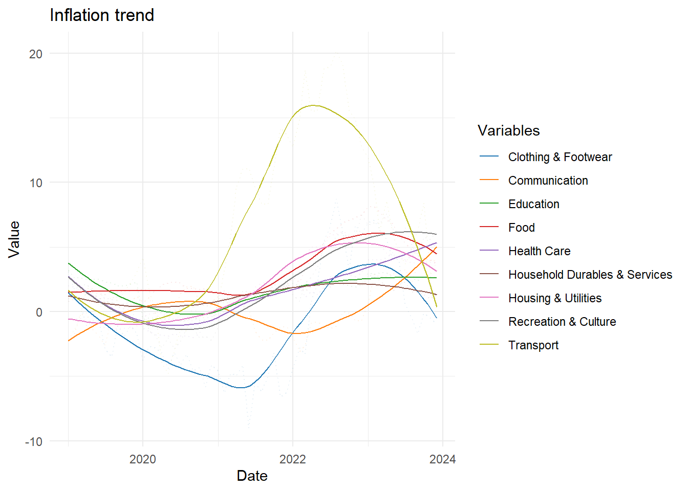

library(tidyverse)
library(ggplot2)
library(knitr)
library(dplyr)
library(readxl)Aliceblue_Project_Prep
Data Preparation
Introduction
This document outlines the data engineering required to reconstruct and improve the visualisation of the heat map as shown in Figure 1, which depicts the monthly inflationary impact on key goods and services across each month in Singapore over 2023.
The code below requires the following packages:

Data Cleaning
The Straits Times based their visualisation on data published by the Singapore Department of Statistics (DOS). whereby the data in CSV format represents the CPI for each category of key goods and services with 2019 as the base year. The CSV file contains 15 separate sheets which cover average retail prices, CPI and year-on-year percent change in CPI across various time periods (annual, half-yearly, quarterly, and monthly) respectively.
However, with reference to Figure 1, only Sheet T11 (Percent Change In Consumer Price Index (CPI) Over Corresponding Period Of Previous Year, 2019 As Base Year, Monthly) will be used to accurately reflect the year-on-year data ordered by month as visualised in the heat map.
Relevant columns for data processing include:
Variables: Name of key items. These are separated into sub-categories such as “Food”, “Clothing & Footwear”, “Housing & Utilities”, etc.Date columns: These represent year-on-year CPI values for each Variable. The columns are named according to the corresponding year and month they represent, such as 2019 Jan, 2020 Jun, etc.
The following code loads the data from Sheet T11 in the CSV file, skipping the first 5 rows and removing any rows with NA values:
# Load full data, select specific sheet (T11), skip first 5 rows and remove rows with NA values
data <- read_excel("cpiapr24.xlsx", sheet = "T11", skip = 5) |>
filter(if_all(everything(), ~ !is.na(.)))
data# A tibble: 152 × 749
Variables `1962 Jan` `1962 Feb` `1962 Mar` `1962 Apr` `1962 May` `1962 Jun`
<chr> <chr> <chr> <chr> <chr> <chr> <chr>
1 All Items 0.4 0.9 -0.7 0.5 1.1000000… 0.9
2 Food 0.5 1.5 -1.2 0.9 1.9 1.4
3 Food Excl … na na na na na na
4 Bread & Ce… na na na na na na
5 Rice na na na na na na
6 Flour na na na na na na
7 Bread na na na na na na
8 Noodles & … na na na na na na
9 Biscuits &… na na na na na na
10 Cakes & Pa… na na na na na na
# ℹ 142 more rows
# ℹ 742 more variables: `1962 Jul` <chr>, `1962 Aug` <chr>, `1962 Sep` <chr>,
# `1962 Oct` <chr>, `1962 Nov` <chr>, `1962 Dec` <chr>, `1963 Jan` <chr>,
# `1963 Feb` <chr>, `1963 Mar` <chr>, `1963 Apr` <chr>, `1963 May` <chr>,
# `1963 Jun` <chr>, `1963 Jul` <chr>, `1963 Aug` <chr>, `1963 Sep` <chr>,
# `1963 Oct` <chr>, `1963 Nov` <chr>, `1963 Dec` <chr>, `1964 Jan` <chr>,
# `1964 Feb` <chr>, `1964 Mar` <chr>, `1964 Apr` <chr>, `1964 May` <chr>, …The data is filtered to include only the relevant variables so as to focus on the specific categories visualised on the heat map:
# Filter the data to include only these categories
categories <- c(
"Food",
# "Food Excl Food Serving Services", # Temporary commented out
"Clothing & Footwear",
"Housing & Utilities",
"Household Durables & Services",
"Health Care",
"Transport",
"Communication",
"Recreation & Culture",
"Education"
# "Miscellaneous Goods & Services" # Temporary commented out
)The data is then filtered to include only data from the base year onwards (2019). This is done to narrow down the size of the dataset for easier management and faster performance, as well as to ensure the dataset’s consistency with the base year:
# Filter the total inflation every year
total_inf_data <- data |>
filter(Variables %in% "All Items") |>
select(Variables, starts_with(c("2019", "2020", "2021", "2022", "2023"))) |>
# Convert selected columns to numeric
mutate_at(vars(starts_with(c("2019", "2020", "2021", "2022", "2023"))), as.numeric)
# Filter the data to include only these categories and the months from 2019 onwards
data <- data |>
filter(Variables %in% categories) |>
select(Variables, starts_with(c("2019", "2020", "2021", "2022", "2023"))) |>
# Convert selected columns to numeric
mutate_at(vars(starts_with(c("2019", "2020", "2021", "2022", "2023"))), as.numeric)
# Print the filtered data
options(max.print = 1e6)
print(data, n = nrow(data), width = Inf)# A tibble: 9 × 61
Variables `2019 Jan` `2019 Feb` `2019 Mar` `2019 Apr`
<chr> <dbl> <dbl> <dbl> <dbl>
1 Food 1.6 1.5 1.7 1.5
2 Clothing & Footwear 3.1 1.7 0.7 -1.1
3 Housing & Utilities -0.6 -0.6 -0.5 -0.7
4 Household Durables & Services 0.8 1 0.7 1.5
5 Health Care 2 1.9 1.8 1.4
6 Transport -2.2 -1.4 -0.5 1.8
7 Communication -2.3 -1.8 -0.3 -0.1
8 Recreation & Culture 1 1.2 2 2.1
9 Education 3.2 2.6 2.6 2.5
`2019 May` `2019 Jun` `2019 Jul` `2019 Aug` `2019 Sep` `2019 Oct` `2019 Nov`
<dbl> <dbl> <dbl> <dbl> <dbl> <dbl> <dbl>
1 1.5 1.4 1.3 1.6 1.5 1.6 1.6
2 -0.7 -0.7 -2.9 -3.5 -1.1 -1.9 -1.1
3 -0.8 -0.9 -1.3 -1.4 -1.3 -1.3 -1.3
4 1.2 1.1 0.7 0.7 0.4 0.2 0.5
5 1.5 1 1.1 0.9 1.2 1 0.1
6 1.8 0.4 0.4 1.2 0.8 1.6 2.2
7 -1.4 -1.9 -2.6 -0.5 -1.1 -0.9 0.8
8 1.6 1.6 0.9 0.5 0.5 0.6 0.9
9 2.5 2.5 2.3 2.2 2 2 2.1
`2019 Dec` `2020 Jan` `2020 Feb` `2020 Mar` `2020 Apr` `2020 May` `2020 Jun`
<dbl> <dbl> <dbl> <dbl> <dbl> <dbl> <dbl>
1 1.7 1.7 1.6 1.5 2.1 2.2 2.3
2 -1.7 -3.8 -2.7 -2.8 -3.2 -4.4 -3.2
3 -1.1 -0.4 -0.2 -0.1 0.1 0.1 0.2
4 0.6 0.4 0.4 0.5 -0.2 -0.4 0
5 -0.6 -1.3 -1.5 -1.8 -1.8 -1.9 -1.7
6 3.1 4.2 1.7 0.1 -4 -4.8 -3.1
7 1.2 0.7 1.1 -0.2 -0.6 -0.5 0
8 0.1 0.5 -1.5 -1.8 -2.8 -2 -2.9
9 2.3 -0.6 -0.5 -0.5 -0.6 -0.6 -0.6
`2020 Jul` `2020 Aug` `2020 Sep` `2020 Oct` `2020 Nov` `2020 Dec` `2021 Jan`
<dbl> <dbl> <dbl> <dbl> <dbl> <dbl> <dbl>
1 2.2 1.8 1.8 1.7 1.8 1.6 1.5
2 -4.1 -3.3 -4.6 -4.3 -5.8 -4.1 -4.6
3 -0.8 -0.7 -0.7 -0.3 -0.3 -0.2 -0.3
4 0.2 0.3 0.7 0.7 0.4 0.5 1
5 -1.9 -1.9 -2 -1.7 -0.5 -0.4 -0.1
6 -1.4 -1.5 0.5 -0.6 -0.4 0.6 0.7
7 1.4 1.9 2 0.8 0.8 0.7 1.2
8 -2.3 -1.4 -1.2 -2 -1.9 -2.2 -1.2
9 -0.7 -0.7 -0.3 -0.7 -0.8 -1 0.7
`2021 Feb` `2021 Mar` `2021 Apr` `2021 May` `2021 Jun` `2021 Jul` `2021 Aug`
<dbl> <dbl> <dbl> <dbl> <dbl> <dbl> <dbl>
1 1.6 1.4 1 1 0.9 1.1 1.5
2 -6.3 -4.8 -4.9 -4.1 -9 -5.5 -6.2
3 -0.3 -0.2 0.5 0.6 0.8 1.9 2.2
4 1 1.2 1.2 1.6 1.5 1.6 1.6
5 -0.2 1 0.9 1 1.1 1.6 1.7
6 3.1 5.7 9.7 11 11.1 9.6 8.3
7 0.6 0.8 -0.3 0.4 0.2 -1.5 -2.2
8 0.1 0.3 0.8 1 1.1 1.4 1.4
9 1 1 1 1 1.3 1.4 1.3
`2021 Sep` `2021 Oct` `2021 Nov` `2021 Dec` `2022 Jan` `2022 Feb` `2022 Mar`
<dbl> <dbl> <dbl> <dbl> <dbl> <dbl> <dbl>
1 1.6 1.7 1.9 2.1 2.6 2.3 3.3
2 -5 -3.2 -6.6 -6.2 -4.4 -2.8 -3.3
3 2.3 2.7 3.1 3.4 4.1 4.1 4.4
4 1.5 1.6 1.8 2 1.7 1.7 1.6
5 1.8 1.7 1.5 1.5 1.7 1.9 1.1
6 8.3 11.1 14.2 13.7 12.7 14.8 18.7
7 -2.2 -1.6 -1.2 -1.2 -2 -3.1 -2.6
8 1.5 2.1 2 1.9 1.3 0.8 2.2
9 1.2 1.6 1.6 2 2.2 2 2
`2022 Apr` `2022 May` `2022 Jun` `2022 Jul` `2022 Aug` `2022 Sep` `2022 Oct`
<dbl> <dbl> <dbl> <dbl> <dbl> <dbl> <dbl>
1 4.1 4.5 5.4 6.1 6.4 6.9 7.1
2 0.8 2.2 5.5 6.6 8.7 6 3.2
3 5 5 5.2 5.9 6 6.2 5.9
4 2 2.1 2.1 1.9 2.2 2.3 2.4
5 1.6 1.3 1.9 2.7 2.7 2.8 2.8
6 15.5 15.5 18.8 19 20.2 19 15.5
7 -0.9 -0.8 -1.1 -1.3 -1.1 0 -0.1
8 2.7 3.5 5.1 4.9 5.9 6.1 5.6
9 2 2.4 2.2 2.2 2.2 2.1 2
`2022 Nov` `2022 Dec` `2023 Jan` `2023 Feb` `2023 Mar` `2023 Apr` `2023 May`
<dbl> <dbl> <dbl> <dbl> <dbl> <dbl> <dbl>
1 7.3 7.5 8.1 8.1 7.7 7.1 6.8
2 6.7 6 6.9 7.1 6.3 5.6 4.1
3 5.6 5.5 5.4 5.3 5.2 4.5 4.4
4 2.4 2 2.8 2.7 2.4 1.9 1.6
5 2.7 3 4 4 4 4.2 4.6
6 14.9 12.7 11.9 9.7 6.2 8.6 6
7 -0.7 -0.7 0.6 2.9 2.7 2.7 3
8 5.8 7.5 6.7 6.9 6.8 7.6 6.4
9 1.9 2.1 3 2.9 3 3 2.6
`2023 Jun` `2023 Jul` `2023 Aug` `2023 Sep` `2023 Oct` `2023 Nov` `2023 Dec`
<dbl> <dbl> <dbl> <dbl> <dbl> <dbl> <dbl>
1 5.9 5.3 4.8 4.3 4.1 4 3.7
2 4 0.6 -0.5 -1.7 -0.1 -0.5 -1
3 4.3 3.9 3.8 3.7 3.9 3.8 3.8
4 2.1 2.3 1.5 1.5 1.3 1 1.5
5 5 4 4.3 4.5 5.2 5.1 5.1
6 4.6 3.7 4.8 6.3 8.4 2.8 3.9
7 2.5 3.3 2.2 3.6 3.6 4 3.9
8 5.7 6.5 5.1 4.3 5.8 5.6 6.3
9 2.6 2.6 2.6 2.4 2.7 2.7 2.6# Create a month mapping
month_mapping <- c("Jan" = 1, "Feb" = 2, "Mar" = 3, "Apr" = 4, "May" = 5, "Jun" = 6,
"Jul" = 7, "Aug" = 8, "Sep" = 9, "Oct" = 10, "Nov" = 11, "Dec" = 12)
# Pivot the data frame
pivoted_data <- pivot_longer(
data,
cols = starts_with(c("2019", "2020", "2021","2022", "2023")),
names_to = "Month_Year",
values_to = "Value"
) |>
# Separate the Month column into Year and Month
separate(Month_Year, into = c("Year", "Month"), sep = " ") |>
# Convert Month column into numeric using mapping
mutate(Year = as.numeric(Year), Month = month_mapping[Month]) |>
# To sort the data by Year, then by Month
arrange(Year, Month)
# Pivot the data for the total inflation
pivoted_total_data <- pivot_longer(
total_inf_data,
cols = starts_with(c("2019", "2020", "2021","2022", "2023")),
names_to = "Month_Year",
values_to = "Value"
) |>
# Separate the Month column into Year and Month
separate(Month_Year, into = c("Year", "Month"), sep = " ") |>
# Convert Month column into numeric using mapping
mutate(Year = as.numeric(Year), Month = month_mapping[Month]) |>
# To sort the data by Year, then by Month
arrange(Year, Month)
pivoted_data# A tibble: 540 × 4
Variables Year Month Value
<chr> <dbl> <dbl> <dbl>
1 Food 2019 1 1.6
2 Clothing & Footwear 2019 1 3.1
3 Housing & Utilities 2019 1 -0.6
4 Household Durables & Services 2019 1 0.8
5 Health Care 2019 1 2
6 Transport 2019 1 -2.2
7 Communication 2019 1 -2.3
8 Recreation & Culture 2019 1 1
9 Education 2019 1 3.2
10 Food 2019 2 1.5
# ℹ 530 more rowspivoted_total_data# A tibble: 60 × 4
Variables Year Month Value
<chr> <dbl> <dbl> <dbl>
1 All Items 2019 1 0.4
2 All Items 2019 2 0.5
3 All Items 2019 3 0.7
4 All Items 2019 4 0.9
5 All Items 2019 5 0.9
6 All Items 2019 6 0.5
7 All Items 2019 7 0.2
8 All Items 2019 8 0.4
9 All Items 2019 9 0.4
10 All Items 2019 10 0.5
# ℹ 50 more rowsAttempting to plot the above data using a line graph
#| line-graph-plot
# Maybe it's something to build upon?
# Convert Month and Year to a combined date variable for X-axis
pivoted_data$Date <- as.Date(paste(pivoted_data$Year, pivoted_data$Month, "01", sep = "-"))
pivoted_data# A tibble: 540 × 5
Variables Year Month Value Date
<chr> <dbl> <dbl> <dbl> <date>
1 Food 2019 1 1.6 2019-01-01
2 Clothing & Footwear 2019 1 3.1 2019-01-01
3 Housing & Utilities 2019 1 -0.6 2019-01-01
4 Household Durables & Services 2019 1 0.8 2019-01-01
5 Health Care 2019 1 2 2019-01-01
6 Transport 2019 1 -2.2 2019-01-01
7 Communication 2019 1 -2.3 2019-01-01
8 Recreation & Culture 2019 1 1 2019-01-01
9 Education 2019 1 3.2 2019-01-01
10 Food 2019 2 1.5 2019-02-01
# ℹ 530 more rows# Use Qualitative Color Palette for different categories. Use colors that are easily distinguishable with the white bg
custom_colors <- c("#1f77b4", "#ff7f0e", "#2ca02c", "#d62728", "#9467bd", "#8c564b", "#e377c2", "#7f7f7f", "#bcbd22")
plt <- ggplot(pivoted_data, aes(x = Date, y = Value, color = Variables)) +
geom_line(aes(color = Variables), alpha = 0.1, linetype="dotted") + # add the exact line graph (harsh)
scale_color_manual(values = custom_colors) +
geom_smooth(method = "auto", se = FALSE, aes(group = Variables), linewidth = 0.5) + # Add a smooth curve
# geom_point(aes(color=Variables), alpha=0.2) + # add the exact data point
labs(
title = "Inflation trend",
x = "Date",
y = "Value"
) +
theme_minimal()
plt`geom_smooth()` using method = 'loess' and formula = 'y ~ x'
Attempting to plot a heatmap using the preprocessed above
df_long <-
pivot_longer(data, cols = -Variables, names_to = "Month", values_to = "Value")
df_long# A tibble: 540 × 3
Variables Month Value
<chr> <chr> <dbl>
1 Food 2019 Jan 1.6
2 Food 2019 Feb 1.5
3 Food 2019 Mar 1.7
4 Food 2019 Apr 1.5
5 Food 2019 May 1.5
6 Food 2019 Jun 1.4
7 Food 2019 Jul 1.3
8 Food 2019 Aug 1.6
9 Food 2019 Sep 1.5
10 Food 2019 Oct 1.6
# ℹ 530 more rows# Create a data frame for the year labels and vertical lines
years <- unique(df_long$Year)Warning: Unknown or uninitialised column: `Year`.year_positions <- seq(12.5, by = 12, length.out = length(years))
year_labels <- data.frame(
Year = years,
x_position = seq(6.5, by = 12, length.out = length(years)) # Adjust x_position for year labels
)
ggplot(df_long, aes(x = Month, y = Variables, fill = Value)) +
geom_tile(color = "white") +
scale_fill_gradient2(name = "Inflation Rate\nPercentage Change",
low = "red", # Red (low end)
mid = "white", # White (midpoint)
high = "blue", # blue (high end)
midpoint = 0, # Set midpoint to 0
breaks = c(20, 10, 0, -7), # Specify breaks
labels = c("20", "10", "0", "-7"), # Specify labels
) +
labs(x = "Years", y = "Variables", title = "Heatmap of Variables by Month") +
theme_minimal() +
theme(legend.position = "top", # Move legend to the top
plot.title = element_text(hjust = 0.5), # Center plot title
axis.text.x = element_blank() # Remove x-axis text
) +
coord_fixed(ratio = 5) + # Ensure square tiles
geom_vline(xintercept = c(12.5, 24.5,36.5, 48.5, 60.5), linetype = "dashed", color = "black") # Add vertical linesTesting another chart
pivoted_total_data$Date <- as.Date(paste(pivoted_total_data$Year, pivoted_total_data$Month, "01", sep = "-"))
test_plot <- ggplot(pivoted_data, aes(x = Date, y = Value, fill = Variables)) +
geom_line() +
geom_bar(data = pivoted_total_data, aes(x = Date, y = Value), stat = "identity", fill = "grey") +
facet_wrap(~ Variables, scales = "free_y") + # Separate facets for each category
labs(title = "Trends vs Overall Average", x = "Year", y = "Value") +
theme_minimal()
test_plot + scale_y_continuous(sec.axis = sec_axis(~./max(.)*max(pivoted_total_data$Value), name = "Average Inflation Rate")) +
coord_flip()test_plot# Create the bar chart
ggplot(pivoted_total_data, aes(x = Date, y = Value)) +
geom_bar(stat = "identity", fill = "steelblue") +
labs(title = "Bar Chart of Pivoted Total Data", x = "Category", y = "Inflation Rate") +
theme_minimal()Test scatter plot with trend line
# Convert Month and Year to a combined date variable for X-axis
pivoted_data$Date <- as.Date(paste(pivoted_data$Year, pivoted_data$Month, "01", sep = "-"))
# Create scatter plot
scatter_plot <- ggplot(pivoted_data, aes(x = Date, y = Value, color = Variables)) +
geom_point(alpha = 0.6, size = 2) + # Adjusted point size for better visibility
geom_smooth(method = "lm", se = FALSE, linetype = "dashed", linewidth = 1) + # Adjusted line width for clarity
scale_color_manual(values = custom_colors) +
labs(
title = "Scatter Plot of Year-on-Year CPI Changes by Category",
x = "Date",
y = "CPI Change (%)"
) +
theme_minimal() +
theme(
plot.title = element_text(size = 16, face = "bold"),
axis.title = element_text(size = 14),
axis.text = element_text(size = 12),
legend.title = element_text(size = 14),
legend.text = element_text(size = 12),
legend.position = "right"
)
scatter_plot`geom_smooth()` using formula = 'y ~ x'